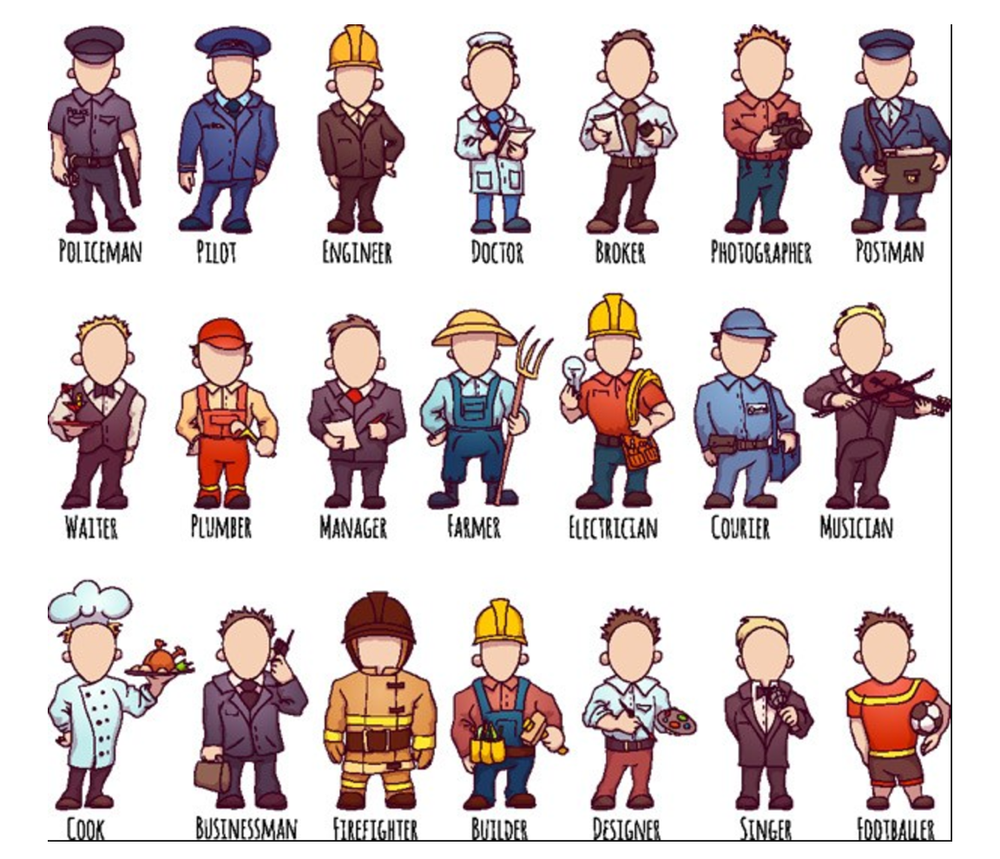

回忆非监督学习的特点？

我们可以怎样最有用地对其进行归纳和分组？我们可以怎样以一种压缩格式有效地表征数据？这都是无监督学习的目标，之所以称之为无监督，是因为这是从无标签的数据开始学习的。
我们先来看一下一个K-means的聚类效果图

我们以一张图来解释效果

K-means API
sklearn.cluster.KMeans(n_clusters=8,init=‘k-means++’)%matplotlib inline
import numpy as np
import matplotlib.pyplot as plt
#matplotlib inline
from sklearn import metrics
from sklearn.datasets.samples_generator import make_blobs
# X为样本特征，Y为样本簇类别， 共1000个样本，
# 每个样本4个特征，共4个簇，簇中心在[-1,-1], [0,0],[1,1],[2,2]， 簇方差分别为[0.4, 0.2, 0.2]
X, y = make_blobs(n_samples=1000, n_features=2,
centers=[[-1,-1], [0,0], [1,1], [2,2]],
cluster_std=[0.4, 0.2, 0.2, 0.2],
random_state =9)
plt.scatter(X[:, 0], X[:, 1], marker='o')
plt.show()
%matplotlib inline
from sklearn.cluster import KMeans
y_pred = KMeans(n_clusters=2, random_state=9).fit_predict(X)
plt.scatter(X[:, 0], X[:, 1], c=y_pred)
plt.show()
print(metrics.calinski_harabaz_score(X, y_pred))
#Calinski-Harabasz Index对应的方法是metrics.calinski_harabaz_score
%matplotlib inline
from sklearn.cluster import KMeans
y_pred = KMeans(n_clusters=3, random_state=9).fit_predict(X)
plt.scatter(X[:, 0], X[:, 1], c=y_pred)
plt.show()
print(metrics.calinski_harabaz_score(X, y_pred))
%matplotlib inline
from sklearn.cluster import KMeans
y_pred = KMeans(n_clusters=4, random_state=9).fit_predict(X)
plt.scatter(X[:, 0], X[:, 1], c=y_pred)
plt.show()
print(metrics.calinski_harabaz_score(X, y_pred))
%matplotlib inline
import numpy as np
import matplotlib.pyplot as plt
from sklearn.cluster import KMeans
from sklearn.metrics import pairwise_distances_argmin
from sklearn.datasets import load_sample_image
from sklearn.utils import shuffle
from time import time
n_colors = 64
# 加载sklearn中样图
china = load_sample_image("china.jpg")
china = np.array(china, dtype=np.float64) / 255
# 加载图像并转换成二维数字阵列
w, h, d = original_shape = tuple(china.shape)
assert d == 3
image_array = np.reshape(china, (w * h, d))
print("一个小样本数据拟合模型")
t0 = time()
image_array_sample = shuffle(image_array, random_state=0)[:1000]
kmeans = KMeans(n_clusters=n_colors,
random_state=0).fit(image_array_sample)
print("完成时间 %0.3fs." % (time() - t0))
# Get labels for all points
print("预测全图像上的颜色指数（k-均值）")
t0 = time()
labels = kmeans.predict(image_array)
print("完成时间 %0.3fs." % (time() - t0))
def recreate_image(codebook, labels, w, h):
"""从代码簿和标签中重新创建（压缩）图像"""
d = codebook.shape[1]
image = np.zeros((w, h, d))
label_idx = 0
for i in range(w):
for j in range(h):
image[i][j] = codebook[labels[label_idx]]
label_idx += 1
return image
# 与原始图像一起显示所有结果
plt.figure(1)
plt.clf()
ax = plt.axes([0, 0, 1, 1])
plt.axis('off')
plt.title('Original image (96,615 colors)')
plt.imshow(china)
plt.figure(2)
plt.clf()
ax = plt.axes([0, 0, 1, 1])
plt.axis('off')
plt.title('Quantized (64 colors, K-Means)')
plt.imshow(recreate_image(kmeans.cluster_centers_, labels, w,h))
plt.show()
分析**

注：对于每个点i 为已聚类数据中的样本 ，b_i 为i 到其它族群的所有样本的距离最小值，a_i 为i 到本身簇的距离平均值。最终计算出所有的样本点的轮廓系数平均值

如果b_i>>a_i:趋近于1效果越好， b_i<
API
sklearn.metrics.silhouette_score(X, labels)silhouette_score(cust, pre)
注意：聚类一般做在分类之前